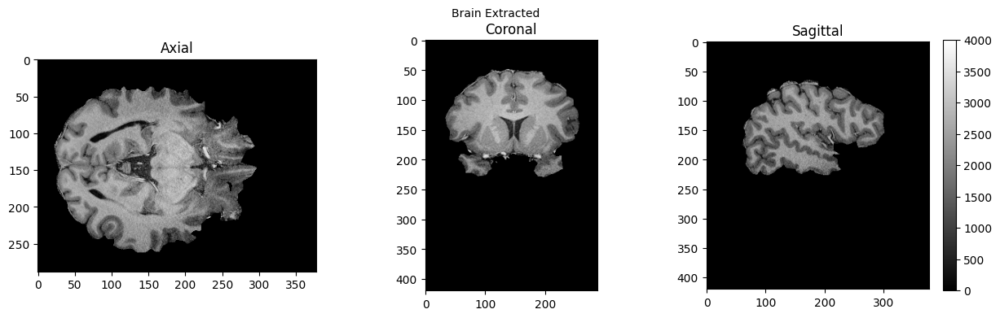

Basic Nipype#
Author: Steffen Bollmann
Output CPU information#
%%bash
cat /proc/cpuinfo | grep 'vendor' | uniq
cat /proc/cpuinfo | grep 'model name' | uniq
vendor_id : GenuineIntel
model name : Intel(R) Xeon(R) Gold 6126 CPU @ 2.60GHz
Demonstrating the module system in Python and Nipype#
# we can use module to load fsl in a specific version
import module
await module.load('fsl/6.0.4')
await module.list()
['fsl/6.0.4']
from nipype.interfaces.fsl.base import Info
print(Info.version())
# if the FSL version is changed using module above, the kernel of the notebook needs to be restarted!
None
!bet
Usage: bet <input> <output> [options]
Main bet2 options:
-o generate brain surface outline overlaid onto original image
-m generate binary brain mask
-s generate approximate skull image
-n don't generate segmented brain image output
-f <f> fractional intensity threshold (0->1); default=0.5; smaller values give larger brain outline estimates
-g <g> vertical gradient in fractional intensity threshold (-1->1); default=0; positive values give larger brain outline at bottom, smaller at top
-r <r> head radius (mm not voxels); initial surface sphere is set to half of this
-c <x y z> centre-of-gravity (voxels not mm) of initial mesh surface.
-t apply thresholding to segmented brain image and mask
-e generates brain surface as mesh in .vtk format
Variations on default bet2 functionality (mutually exclusive options):
(default) just run bet2
-R robust brain centre estimation (iterates BET several times)
-S eye & optic nerve cleanup (can be useful in SIENA - disables -o option)
-B bias field & neck cleanup (can be useful in SIENA)
-Z improve BET if FOV is very small in Z (by temporarily padding end slices)
-F apply to 4D FMRI data (uses -f 0.3 and dilates brain mask slightly)
-A run bet2 and then betsurf to get additional skull and scalp surfaces (includes registrations)
-A2 <T2> as with -A, when also feeding in non-brain-extracted T2 (includes registrations)
Miscellaneous options:
-v verbose (switch on diagnostic messages)
-h display this help, then exits
-d debug (don't delete temporary intermediate images)
Load afni and SPM as well#
await module.load('afni/22.3.06')
await module.load('spm12/r7771')
await module.list()
['fsl/6.0.4', 'afni/22.3.06', 'spm12/r7771']
download test data#
%%bash
if [ -f ./sub-01_ses-01_7T_T1w_defaced.nii ]; then
echo "nii Output file exists, not downloading or unpacking again"
else
if [ ! -f ./sub-01_ses-01_7T_T1w_defaced.nii.gz ]; then
echo "nii.gz does not exist. So, it needs to be downloaded."
osfURL="osfstorage/TOMCAT_DIB/sub-01/ses-01_7T/anat/sub-01_ses-01_7T_T1w_defaced.nii.gz"
echo "downloading now ..."
osf -p bt4ez fetch $osfURL ./sub-01_ses-01_7T_T1w_defaced.nii.gz
fi
if [ -f ./sub-01_ses-01_7T_T1w_defaced.nii.gz ]; then
echo "nii.gz exists. So, it needs to be unpacked and deleted"
echo "unpacking now ..."
gunzip ./sub-01_ses-01_7T_T1w_defaced.nii.gz
fi
fi
nii.gz does not exist. So, it needs to be downloaded.
downloading now ...
nii.gz exists. So, it needs to be unpacked and deleted
unpacking now ...
100%|██████████| 72.7M/72.7M [00:08<00:00, 8.99Mbytes/s]
%ls
MRIQC.ipynb bids_conversion.ipynb sub-01_ses-01_7T_T1w_defaced.nii
PyBIDS.ipynb nipype_full.ipynb
RISE_slideshow.ipynb nipype_short.ipynb
run nipype pipeline#
%%capture
!pip install nibabel numpy scipy
from nipype.interfaces import fsl
from nipype.interfaces import afni
btr = fsl.BET()
btr.inputs.in_file = './sub-01_ses-01_7T_T1w_defaced.nii'
btr.inputs.frac = 0.4
btr.inputs.out_file = './sub-01_ses-01_7T_T1w_defaced_brain.nii'
res = btr.run()
edge3 = afni.Edge3()
edge3.inputs.in_file = './sub-01_ses-01_7T_T1w_defaced.nii'
edge3.inputs.out_file = './sub-01_ses-01_7T_T1w_defaced_edges.nii'
edge3.inputs.datum = 'byte'
res = edge3.run()
250604-03:51:38,804 nipype.interface WARNING:
FSLOUTPUTTYPE environment variable is not set. Setting FSLOUTPUTTYPE=NIFTI
250604-03:51:49,813 nipype.interface INFO:
stderr 2025-06-04T03:51:49.813256:++ 3dedge3: AFNI version=AFNI_22.3.06 (Nov 15 2022) [64-bit]
250604-03:51:49,815 nipype.interface INFO:
stderr 2025-06-04T03:51:49.815020:** AFNI converts NIFTI_datatype=4 (INT16) in file /home/jovyan/Git_repositories/example-notebooks/books/workflows/sub-01_ses-01_7T_T1w_defaced.nii to FLOAT32
250604-03:51:49,815 nipype.interface INFO:
stderr 2025-06-04T03:51:49.815020: Warnings of this type will be muted for this session.
250604-03:51:49,815 nipype.interface INFO:
stderr 2025-06-04T03:51:49.815020: Set AFNI_NIFTI_TYPE_WARN to YES to see them all, NO to see none.
250604-03:51:49,823 nipype.interface INFO:
stderr 2025-06-04T03:51:49.823697:*+ WARNING: If you are performing spatial transformations on an oblique dset,
250604-03:51:49,824 nipype.interface INFO:
stderr 2025-06-04T03:51:49.823697: such as /home/jovyan/Git_repositories/example-notebooks/books/workflows/sub-01_ses-01_7T_T1w_defaced.nii,
250604-03:51:49,824 nipype.interface INFO:
stderr 2025-06-04T03:51:49.823697: or viewing/combining it with volumes of differing obliquity,
250604-03:51:49,824 nipype.interface INFO:
stderr 2025-06-04T03:51:49.823697: you should consider running:
250604-03:51:49,825 nipype.interface INFO:
stderr 2025-06-04T03:51:49.823697: 3dWarp -deoblique
250604-03:51:49,825 nipype.interface INFO:
stderr 2025-06-04T03:51:49.823697: on this and other oblique datasets in the same session.
250604-03:51:49,825 nipype.interface INFO:
stderr 2025-06-04T03:51:49.823697: See 3dWarp -help for details.
250604-03:51:49,826 nipype.interface INFO:
stderr 2025-06-04T03:51:49.823697:++ Oblique dataset:/home/jovyan/Git_repositories/example-notebooks/books/workflows/sub-01_ses-01_7T_T1w_defaced.nii is 1.253358 degrees from plumb.
%ls
MRIQC.ipynb nipype_short.ipynb
PyBIDS.ipynb sub-01_ses-01_7T_T1w_defaced.nii
RISE_slideshow.ipynb sub-01_ses-01_7T_T1w_defaced_brain.nii.gz
bids_conversion.ipynb sub-01_ses-01_7T_T1w_defaced_edges.nii
nipype_full.ipynb
# View 3D data
import matplotlib.pyplot as plt
def view_slices_3d(image_3d, slice_nbr, vmin, vmax, title=''):
# print('Matrix size: {}'.format(image_3d.shape))
fig = plt.figure(figsize=(15, 4))
plt.suptitle(title, fontsize=10)
plt.subplot(131)
plt.imshow(np.take(image_3d, slice_nbr, 2), vmin=vmin, vmax=vmax, cmap='gray')
plt.title('Axial');
plt.subplot(132)
image_rot = ndimage.rotate(np.take(image_3d, slice_nbr, 1),90)
plt.imshow(image_rot, vmin=vmin, vmax=vmax, cmap='gray')
plt.title('Coronal');
plt.subplot(133)
image_rot = ndimage.rotate(np.take(image_3d, slice_nbr, 0),90)
plt.imshow(image_rot, vmin=vmin, vmax=vmax, cmap='gray')
plt.title('Sagittal');
cbar=plt.colorbar()
def get_figure():
"""
Returns figure and axis objects to plot on.
"""
fig, ax = plt.subplots(1)
plt.tick_params(top=False, right=False, which='both')
ax.spines['top'].set_visible(False)
ax.spines['right'].set_visible(False)
return fig, ax
import nibabel as nib
from matplotlib import transforms
from scipy import ndimage
import numpy as np
# load data
brain_full = nib.load('./sub-01_ses-01_7T_T1w_defaced.nii').get_fdata()
brain = nib.load('./sub-01_ses-01_7T_T1w_defaced_brain.nii.gz').get_fdata()
edges = nib.load('./sub-01_ses-01_7T_T1w_defaced_edges.nii').get_fdata()
view_slices_3d(brain_full, slice_nbr=230, vmin=0, vmax=4000, title='Brain and Skull')
view_slices_3d(brain, slice_nbr=230, vmin=0, vmax=4000, title='Brain Extracted')
view_slices_3d(edges, slice_nbr=230, vmin=0, vmax=1000, title='Edges')

from ipyniivue import NiiVue
nv = NiiVue()
nv.load_volumes([{"path": "./sub-01_ses-01_7T_T1w_defaced_brain.nii.gz"}])
nv
from IPython.display import Image
Image(url='https://raw.githubusercontent.com/NeuroDesk/example-notebooks/refs/heads/main/books/images/sub-01_ses-01_7T_T1w_defaced_brain.png')

SPM can also be used in such a workflow, but unfortunately, this will trigger a warning “stty: ‘standard input’: Inappropriate ioctl for device”, which you can ignore (or help us to find out where it comes from):
import nipype.interfaces.spm as spm
norm12 = spm.Normalize12()
norm12.inputs.image_to_align = './sub-01_ses-01_7T_T1w_defaced.nii'
norm12.run()
stty: 'standard input': Inappropriate ioctl for device
stty: 'standard input': Inappropriate ioctl for device
<nipype.interfaces.base.support.InterfaceResult at 0x7fc8c9a78bd0>
brain_full = nib.load('./wsub-01_ses-01_7T_T1w_defaced.nii').get_fdata()
view_slices_3d(brain_full, slice_nbr=50, vmin=0, vmax=4000, title='Brain normalized to MNI space')
nv = NiiVue()
nv.load_volumes([{"path": "./wsub-01_ses-01_7T_T1w_defaced.nii"}])
nv
Image(url='https://raw.githubusercontent.com/NeuroDesk/example-notebooks/refs/heads/main/books/images/wsub-01_ses-01_7T_T1w_defaced.png')